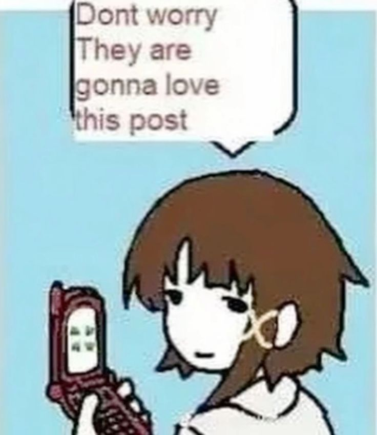

This is my personal website! I made it so i could post about the things I like and stuff I want to talk about. I like to stay at home and code (;-;) I should probably go outside more study more (O_O)
I also do some 3D modeling sometimes, i love SEL (I know it's hard to tell) and I also love my girlfriend I LOVE YOU LILLY!
Stay as long as you want! (And please remember that this site is still a work in progress) (;-;)
I am starting to improve my coding learning, and i decided to make the research of my first youtube video ever made
I've never been more motivated, i still need to end the research but when it's done i'm gonna make the perfect video about it (for me of course)
I'm gonna make it inspired by the movie "The Social Network" (cool ass movie and my favorite one)
After the yesterday's research, today is finally sunday, tommorrow i have a job interview and i need to end my C book in one night
Death to all the "short" media style, and live long to the indie web community